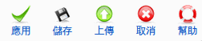

Super Administrator
Super Administrator  Administrator Manager
Administrator Manager
編輯分類.
To access this screen use: Components -> EventList -> 新增 或 點選分類標題
Super Administrator Administrator Manager

應用: 儲存此次修改, 並停留在同一頁.
儲存: 儲存此次修改, 返回前一頁.
上傳:上傳一張圖片.
取消: 放棄這次修改, 並返回前一頁.
幫助: Opens this help screen.
分類: 輸入分類標題.
別名: 輸入分類別名.
發佈: 設定分類是否發佈,若為停止發佈,則在前台無法看見該分類. 編輯活動時也無法選擇該分類.
分類說明: 輸入該分類說明.
存取: 顯示目前該分類開放給何種使用者, 有 註冊會員、特定的、公開的三種選項.
社群: 顯示分類屬於哪種群組, 一個分類只能擁有一個群組.
圖片: 選擇屬於該分類的圖片.